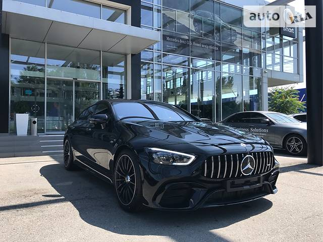

Купе •5 дверей • 5 місць
Пробіг без пробігу
Двигун (435 к.с. / 320 кВт) • Бензин
Коробка передач Автомат
Привід Повний
Колір Чорний металік
Схожі оголошенняMercedes-Benz AMG GT 63 2019Mercedes-Benz AMG GT 63 2019 |
Ціна: 155 300 €
182 970 $ • 5 196 338 грн Зворотній адресс |
|
Стан автомобіля ★ ★ ★ ★ ★
Стан двигуна ★ ★ ★ ★ ★ Зовнішній стан ★ ★ ★ ★ ★ Стан склопідйомників ★ ★ ★ ★ ☆ Стан електроніки ★ ★ ★ ★ ★ |
Стан форсунок ★ ★ ★ ★ ★
Стан фарби ★ ★ ★ ★ ★ Стан рульової колодки ★ ★ ★ ★ ☆ Стан вихлопної труби ★ ★ ★ ★ ☆ Стан салону ★ ★ ★ ★ ★ |